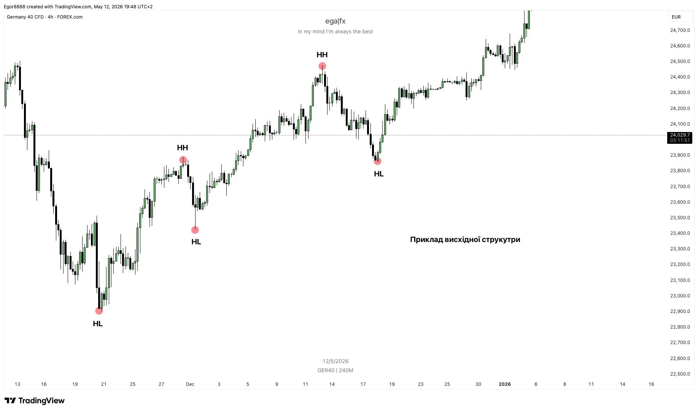
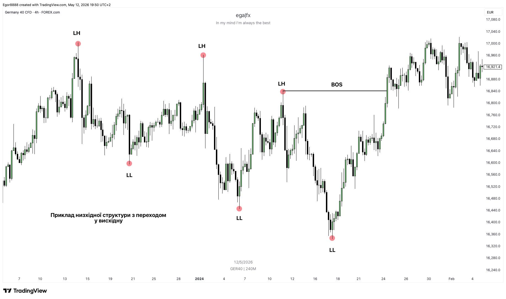
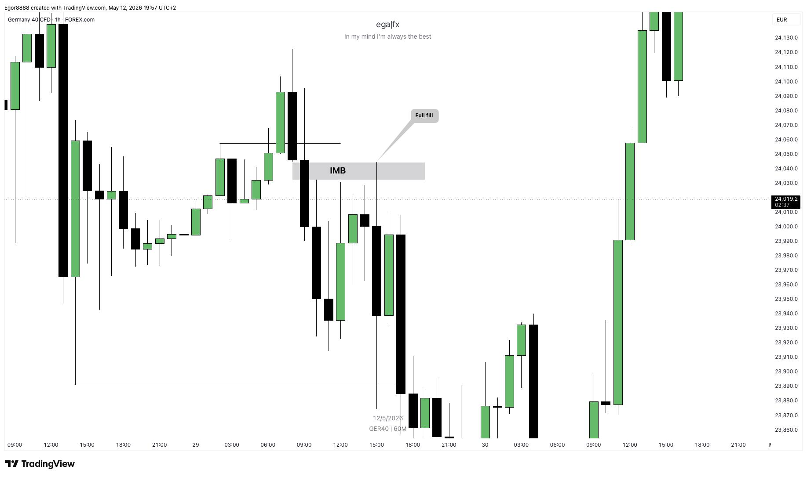
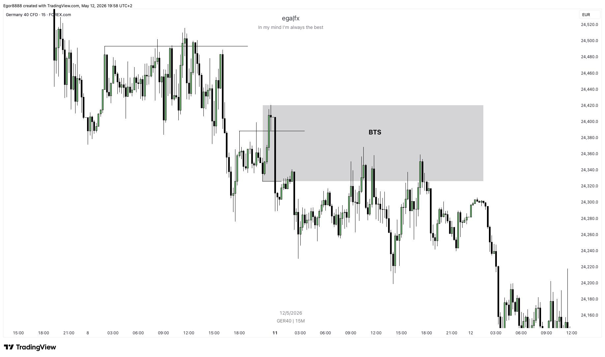

Трейдинг с острым чутьём
Онлайн-платформа для изучения трейдинга, анализа рынка, риск-менеджмента и развития дисциплины трейдера.
О проекте
WhiskerEdge Academy — образовательная платформа, созданная для тех, кто хочет изучать трейдинг системно: от базовых понятий до анализа графиков, управления рисками и проверки знаний через тестирование.
Преимущества платформы
Пошаговое обучение
Материал разделён на понятные темы, чтобы обучение проходило постепенно.
Практический подход
Акцент сделан на примерах, анализе ситуаций и применении знаний.
Проверка знаний
После изучения тем пользователь сможет пройти тестирование.
Как работает обучение
1. Изучение теории
Пользователь знакомится с основами рынка и ключевыми понятиями.
2. Анализ примеров
На основе графиков и ситуаций разбираются торговые сценарии.
3. Тестирование
После прохождения материала выполняется проверка знаний.
Наша команда
Артур
Администратор сайта
Егор
Специалист
Часто задаваемые вопросы
Нет. Обучение начинается с базовых понятий.
В среднем от 4 до 8 недель в зависимости от программы.
Да. В проекте предусмотрен отдельный раздел тестирования знаний.
Да. Структура сайта рассчитана на курсы, уроки, тесты и вспомогательные инструменты.
Описание курсов
Курсы WhiskerEdge Academy построены как бесплатная учебная система, где пользователь постепенно проходит материалы, изучает графики, выполняет тестирование и открывает доступ к следующим видео-урокам.
Модули курса
1. Завышенные ожидания
Базовые ошибки новичков, реалистичные цели и дисциплина в трейдинге.
2. Словарь - Базовые понятия
Свечи, структура рынка, ликвидность и базовые торговые термины.
3. Рыночная структура - основа понимания рынка
Структура рынка, тренды и определение направления цены.
4. Ликвидность - Бензин для движения цены
Ликвидность, стопы участников рынка и движение цены.
5. Торговые инструменты - Ключ к поиску позиций
Торговые инструменты, дисбаланс цены и рыночные манипуляции.
Логика прохождения уроков
Каждый урок построен как последовательный учебный сценарий: сначала пользователь смотрит видео, затем изучает графики, проходит тестирование и только после результата получает доступ к следующему видео-уроку.
Видео-урок
Пользователь изучает новую тему через короткий учебный ролик.
Осмотр графиков
После видео открываются примеры графиков и рыночных ситуаций.
Тестирование
Пользователь отвечает на вопросы по пройденной теме.
Результаты
Система показывает количество правильных ответов и итоговый процент.
Следующий урок
При успешном результате открывается доступ к следующему видео.
Формат обучения
Бесплатный доступ
Материалы курса доступны бесплатно и не требуют покупки.
Пошаговая система
Новые материалы открываются после прохождения предыдущих этапов.
Контроль знаний
Тесты помогают оценить понимание темы перед переходом дальше.
Обучение
В этом разделе пользователь проходит 5 последовательных уроков. Уроки включают в себя видео, графики, мини-тесты и результаты. Следующий урок открывается только после прохождения теста предыдущего.
Прогресс обучения: 0%
Уроки курса
Урок 1. Завищені очікування
Теоретичний матеріал
Завищені очікування
Завищені очікування — одна з найпоширеніших проблем серед новачків у трейдингу. Саме вони часто стають причиною розчарувань, фінансових втрат і навіть повної відмови від подальшого розвитку в цій сфері.
Багато хто приходить у трейдинг, надихнувшись чужими результатами: історіями друзів, знайомих або людей з інтернету. Через це складається враження, що подібного рівня можна досягти швидко й без особливих зусиль.
Насправді стабільна торгівля будується поступово: через вивчення інструментів, формування торгових сетапів, тестування, відпрацювання та контроль ризиків. Без цього трейдер починає поспішати, приймати емоційні рішення та порушувати власні правила.
Важливо з самого початку налаштуватися на реалістичний підхід. Трейдинг — це не про швидкі гроші, а про довгу дистанцію, де ключову роль відіграють терпіння, дисципліна та здатність робити висновки зі своїх помилок.
Тест до уроку
1. Що найчастіше заважає новачку в трейдингу?
2. Яка мета є більш реалістичною для новачка?
3. Чому важливо приймати можливі збитки?
4. Що допомагає зменшити емоційні рішення?
5. Що найкраще описує дисципліну трейдера?
Урок 2. Словник — Базові поняття
Теоретичний матеріал
Словник – базові поняття
Криптовалютні терміни
Тест до уроку
1. Що показує свічка на графіку?
2. Що таке ліквідність?
3. Що таке таймфрейм?
4. Що таке стоп-лосс?
5. Що означає тренд?
Урок 3. Ринкова структура — основа розуміння ринку
Графік до уроку
Приклад ринкової структури: імпульси, корекції та рівні.


Тест до уроку
1. Що таке ринкова структура?
2. Що може вказувати на висхідну структуру?
3. Що означає BOS?
4. Чому корекції важливі в структурі?
5. Що найчастіше підтверджує зміну структури?
Урок 4. Ліквідність — паливо для руху ціни
Графік до уроку
Приклад зон ліквідності та реакції ціни.

Тест до уроку
1. Що таке ліквідність у трейдингу?
2. Де часто знаходиться buy-side liquidity?
3. Де часто знаходиться sell-side liquidity?
4. Що може статися після зняття ліквідності?
5. Навіщо трейдери відстежують ліквідність?
Урок 5. Торгові інструменти — ключ до пошуку позицій
Графік до уроку
Приклад використання торгових інструментів та реакції ціни.


Тест до уроку
1. Що таке Imbalance (IMB)?
2. Що показує Order Flow?
3. Для чого використовуються зони інтересу (POI)?
4. Що означає STB / BTS?
5. Навіщо трейдер використовує торгові інструменти?
Графики рынка
В этом разделе отображается рыночная информация: изменение цен, капитализация, динамика популярных активов и общее состояние рынка. Блок используется как аналитическое окно для наблюдения за текущей ситуацией.
Графики криптовалют
Ниже представлены учебные графики изменения цены популярных криптовалют.
Bitcoin / BTC
Ethereum / ETH
BNB
Bitcoin / BTC
Помесячная динамика цены Bitcoin за текущий год.
Окно рынка
Market Overview
Крипто-новости
Лента публикаций из Telegram-канала с новостями, графиками и рыночными заметками.
Telegram-лента
@ega_fx
Калькулятор риска
Калькулятор помогает рассчитать допустимый риск в сделке, размер позиции, потенциальную прибыль и соотношение риск/прибыль.
Результат расчёта
Как использовать результат
Риск
Показывает сумму, которую пользователь готов потерять, если сделка закроется по стоп-лоссу.
Размер позиции
Помогает понять, каким объёмом можно войти в сделку, чтобы не превысить заданный риск.
Risk / Reward
Показывает, насколько потенциальная прибыль превышает риск. Например, 1:3 означает, что прибыль в 3 раза больше риска.